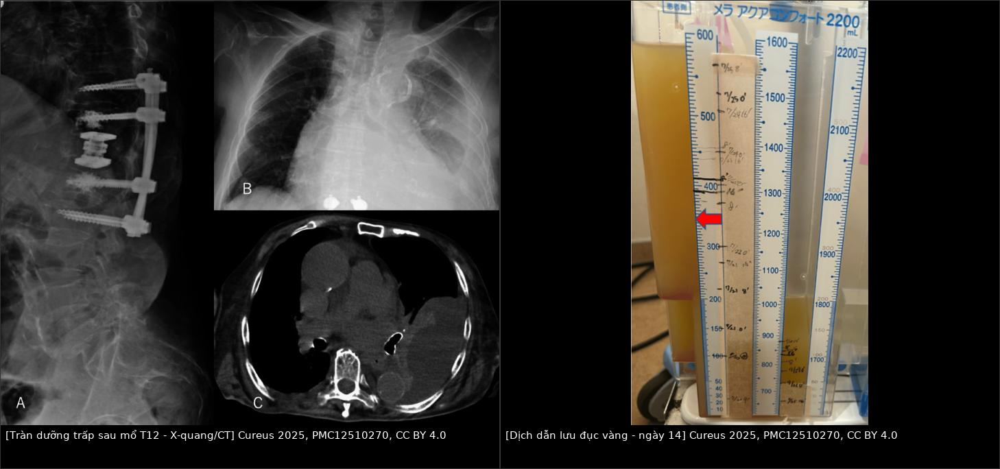
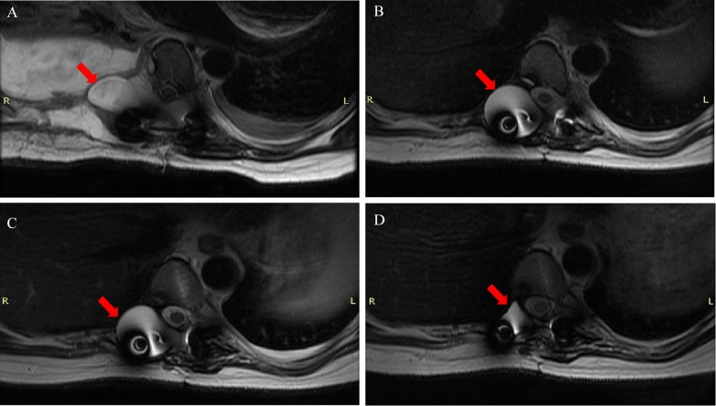
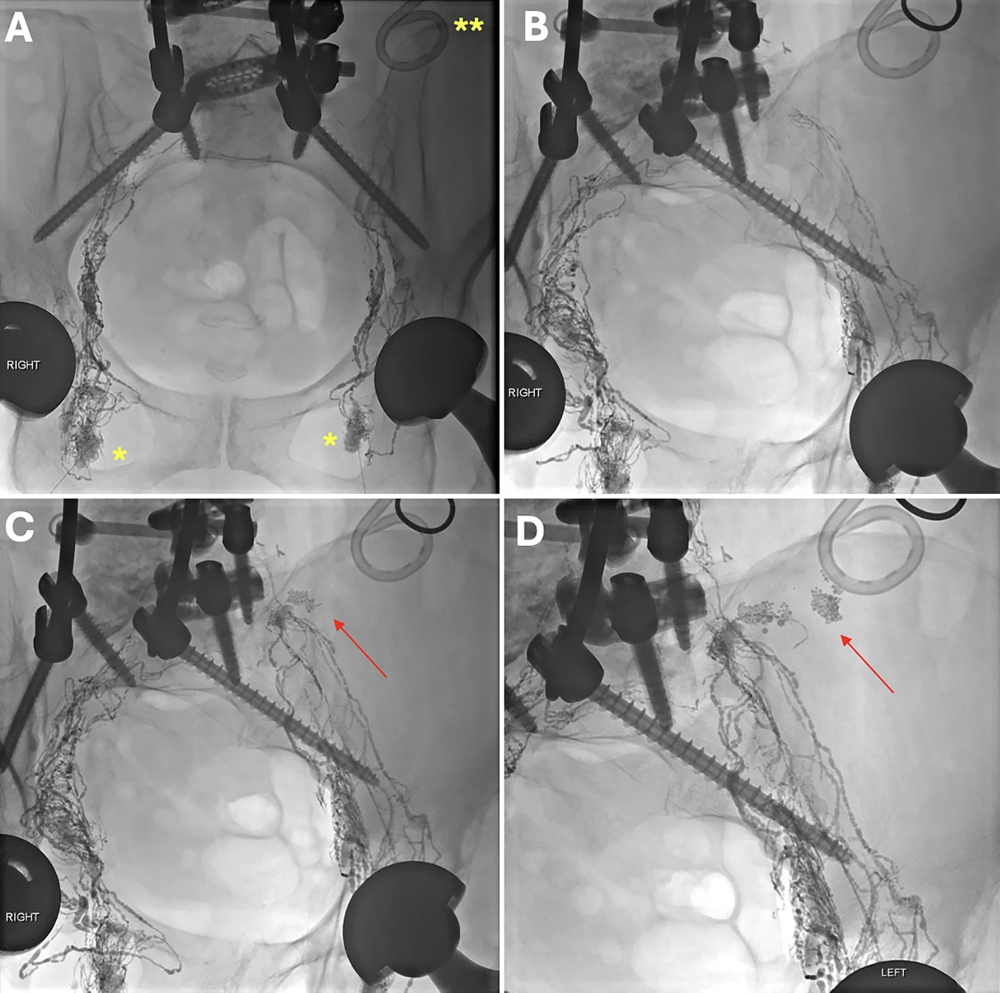

1857 — Tràn dưỡng trấp màng phổi sau mổ cột sống ngực–thắt lưng / Chylothorax after thoracolumbar spine surgery
Tags: pattern:chylothorax pattern:tran-dich-mang-phoi pattern:ro-bach-huyet pattern:ro-dich-nao-tuy vung:mong-phoi vung:trung-that vung:cot-song-nguc vung:sau-phuc-mac protocol:CT-nguc protocol:MRI-cot-song protocol:chup-bach-huyet score:TG-dich
Mức chắc chắn (certainty): tổng hợp y văn (literature synthesis) — biên từ 3 ca rò bạch huyết sau mổ cột sống (J Neurosurg Case Lessons 2026, PMC13659017), ca tràn dưỡng trấp trái sau thay thân đốt T12 đường sau màng phổi (Cureus 2025, PMC12510270, CC BY 4.0), 9 ca dò màng nhện–màng phổi (SPF) sau mổ cột sống ngực + tổng quan 74 ca (J Orthop Surg Res 2025, PMC12574069). Nhóm không có bệnh nhân của mình.
Câu chốt: mổ cột sống không đi vào trung thất vẫn có thể làm rách ống ngực, bể dưỡng trấp hoặc nhánh bạch huyết — tràn dịch xuất hiện muộn 1–3 tuần, thường sau khi đã rút ống dẫn lưu, nên bị đọc là "tràn dịch tồn dư/xẹp phổi". Có hai bệnh hoàn toàn khác nhau cùng nằm trong gamut này và chỉ xét nghiệm dịch mới phân biệt được: dưỡng trấp (triglyceride dịch > 110 mg/dL) và dịch não tủy qua dò màng nhện–màng phổi (β2-transferrin), mà dò dịch não tủy lại thường gặp hơn sau mổ cột sống ngực (6,7% so với < 0,5% của tràn dưỡng trấp).
1. Tổng quan bệnh học – cơ chế hình ảnh (TẠI SAO)
1.1 Ba đường mổ, ba cấu trúc bạch huyết nằm ngay dưới dao
- Bể dưỡng trấp (cisterna chyli) nằm trước thân đốt L1–L2, ngay trong hành lang sau phúc mạc mà OLIF/ALIF đi qua; ống ngực (thoracic duct) đi lên bên phải cột sống trong trung thất sau rồi bắt chéo sang trái ở ngang T4–T6 trước khi đổ vào góc tĩnh mạch cảnh trong – dưới đòn trái; các nhánh bạch huyết trung thất chạy sát góc sườn–đốt sống (costovertebral junction) — đúng nơi phẫu thuật viên lấy chỏm sườn và mỏm ngang khi mổ cột sống ngực (PMC13659017).
- Vì vậy vị trí mổ quyết định bên và tạng dịch: tổn thương dưới mốc bắt chéo T4–T6 → tràn dưỡng trấp bên PHẢI; trên mốc → bên TRÁI; ngang mốc → hai bên. Biến thể ống ngực là quy luật, không phải ngoại lệ (nhiều nhánh, đổ vào TM cảnh trong/TM dưới đòn/TM cánh tay đầu) — vì thế buộc "một ống ngực" có thể thất bại vì còn nhánh thứ hai (PMC13659017).
- Ba bối cảnh thực hành: (1) đường sau/bên ngực T2–T12 (corpectomy, costotransversectomy, cắt chỏm sườn) → chylothorax; (2) đường sau phúc mạc L1–L4 (OLIF/lateral) → rò bạch huyết sau phúc mạc (chylous retroperitoneal collection), có thể không bao giờ vào màng phổi; (3) rách màng não + rách màng phổi cùng lúc → dò màng nhện–màng phổi, dịch là CSF chứ không phải dưỡng trấp.
1.2 TẠI SAO tràn dịch xuất hiện MUỘN (1–3 tuần) — và TẠI SAO lại đúng lúc rút ống
- Lưu lượng thấp so với máu: ống ngực dẫn ~2.500 mL/ngày ở người lớn nhưng rò qua một lỗ nhỏ chỉ vài chục–vài trăm mL/ngày; khoang màng phổi chứa được 1,5–2 L trước khi bệnh nhân khó thở. Ca điển hình: rút dẫn lưu sau màng phổi ngày 7, tràn dịch tiến triển ngày 8–14, chọc dẫn lưu lại ngày 14 (PMC12510270).
- Ống dẫn lưu là "van che" chứ không phải "phát hiện": khi ống còn lưu, dịch ra ngoài theo đường ống (và ống hút áp lực âm còn kéo dính màng phổi quanh lỗ rò); rút ống → dịch tích lại trong khoang mới gây triệu chứng. Trong loạt 3 ca, ca đầu xuất viện ngày 4 với X-quang ngực bình thường, 3 tuần sau mới quay lại vì toác vết mổ + tràn dịch phải (PMC13659017).
- Yếu tố làm tăng lưu lượng sau mổ: ăn lại mỡ chuỗi dài (long-chain triglyceride) sau khi hết nhịn ăn → dưỡng trấp tăng gấp nhiều lần trong 3 giờ sau ăn. Vì thế "tràn dịch xuất hiện sau khi bệnh nhân ăn lại" là mẫu hình gợi ý, không phải trùng hợp.
1.3 Vật lý hình ảnh: vì sao CT không gọi được tên, và vì sao phải đo triglyceride
- CT: dưỡng trấp có đậm độ gần nước (khoảng 0–20 HU), không ngấm thuốc, trùng hoàn toàn với dịch thanh mạc, seroma sau mổ, dịch tồn dư, nước tiểu, dịch não tủy. Trên CT, tất cả chỉ là "dịch đậm độ dịch" — cái tách được bằng HU là máu tụ cấp 35–70 HU và mỡ −40 đến −120 HU.
- Vì sao "trắng sữa": dưỡng trấp đục do tán xạ ánh sáng của hạt chylomicron (đường kính µm), không phải do mỡ tự do — nên bệnh nhân đang nhịn ăn/nuôi tĩnh mạch hoàn toàn có thể ra dịch vàng trong mà vẫn là dưỡng trấp. Ca T12: dịch "đục vàng" (turbid yellow), không trắng sữa, nhưng TG 117 mg/dL (PMC12510270).
- Ngưỡng sinh hóa: TG dịch > 110 mg/dL (1,24 mmol/L) → xác định tràn dưỡng trấp; 50–110 mg/dL là vùng xám, phải tìm chylomicron bằng điện di lipoprotein; TG < 50 mg/dL và dịch trong → rò bạch huyết thường (lymphorrhea), không phải dưỡng trấp. Cạm bẫy đã gặp: ổ dịch sau phúc mạc có TG chỉ 157 mg/dL nhưng có chylomicron — vì dịch bị pha loãng trong khoang sau phúc mạc rộng; không được loại trừ chỉ vì TG "chưa cao" (PMC13659017).
- Dịch não tủy thì ngược lại: trong, glucose ≈ glucose huyết thanh, và β2-transferrin là dấu hiệu chốt (độ nhạy 90–94%, độ đặc hiệu 98–100%); trên MRI T2 nặng thấy đường thông giữa ổ dịch ngoài màng cứng và khoang màng phổi, trên CT tủy (myelography) thấy thuốc cản quang thoát ra màng phổi (PMC12574069).
1.4 Số phải nhớ (dịch tễ, lưu lượng, kết cục)
- Tần suất tràn dưỡng trấp sau mổ cột sống: < 0,5% toàn bộ các mổ cột sống; phần lớn ca đã báo là đường vào cổ bên trái (góc TM cảnh trong–dưới đòn), còn đường sau ngực là cực hiếm (PMC12510270, PMC13659017).
- Dò màng nhện–màng phổi (SPF) lại KHÔNG hiếm: 6,7% (9/135) sau mổ cột sống ngực đường sau có cắt 3 cột, trong đó 9/9 có rách màng não + rách màng phổi, 9/9 có tràn dịch dai dẳng, 5/9 khó thở, 4/9 đau đầu tư thế; triệu chứng xuất hiện ngày 1–10 sau mổ; 9/9 khỏi bằng điều trị bảo tồn (nằm nghỉ, NPPV, dẫn lưu bể thắt lưng 11 ngày, dẫn lưu màng phổi 11,6 ngày), theo dõi 31,6 tháng. Tổng quan 74 ca trong y văn: tràn dịch 91,9%, đau đầu 25,7%, khí nội sọ 18,9%; 66,2% phải mổ vá, 28,4% khỏi bảo tồn, 5,4% tử vong (PMC12574069).
- Lưu lượng quyết định điều trị (chưa thống nhất giữa các nguồn — ghi rõ mâu thuẫn): < 500 mL/ngày** → tiếp tục nội khoa; **500–1.000 mL/ngày** → thử nội khoa **có thời hạn 24–48 giờ**; **> 1.000 mL/ngày hoặc không giảm sau 7–14 ngày → can thiệp. Ca T12 chỉ 100–250 mL/ngày nên theo hướng nội khoa (PMC12510270); ca T2–3 sau chụp bạch mật vẫn còn ~200 mL/ngày nên mổ nội soi buộc ống ngực (PMC13659017).
- Điều trị nội khoa có bằng chứng trong chính bối cảnh cột sống: octreotide 100 µg tiêm dưới da × 3 lần/ngày, dịch ngừng hẳn sau 3 ngày (ngày 30 → ngày 33), rút ống ngày 41, không tái phát sau 6 tháng; chế độ ít mỡ ± MCT làm giảm dịch ở ổ dịch sau phúc mạc và rút ống sau 7–10 ngày (PMC12510270, PMC13659017).
- Chụp bạch mật trong hạch (intranodal lymphangiography) vừa chẩn đoán vừa điều trị: kim 22 G vào hạch bẹn hai bên dưới siêu âm, bơm Lipiodol chậm dưới chiếu huỳnh quang → hiện hình bể dưỡng trấp và ống ngực, thấy điểm thoát thuốc; có thể chọc tiếp bể dưỡng trấp bằng kim 21 G để đặt microcatheter và nút bằng coil + keo NBCA. Trong 3 ca: 1 ca nút đơn thuần thất bại (còn 200 mL/ngày) phải mổ, 1 ca nút keo khỏi, rút ống sau 7 ngày (PMC13659017).
2. Mẫu hình + chẩn đoán phân biệt theo vị trí và bối cảnh (Gamut)
- A — Tràn dịch MỘT BÊN, xuất hiện 1–3 tuần sau mổ cột sống ngực, bệnh nhân đã ăn lại: gamut hẹp — (1) rò ống ngực/nhánh trung thất (dưỡng trấp), (2) dò màng nhện–màng phổi (CSF), (3) tràn dịch phản ứng/xẹp phổi, (4) máu tụ/màng phổi, (5) rò thực quản–màng phổi (nếu mổ có can thiệp trước), (6) empyema. Bốn câu hỏi bắt buộc: dịch đục hay trong? có đau đầu tư thế không? lưu lượng bao nhiêu mL/ngày? triglyceride và glucose dịch bằng bao nhiêu?
- B — Ổ dịch SAU PHÚC MẠC (không có tràn màng phổi): rò bể dưỡng trấp/nhánh thắt lưng sau OLIF/lateral; gamut: lymphocele, máu tụ, nước tiểu (rách niệu quản), dịch tụy (nếu mổ bụng kèm), áp-xe. CT chỉ thấy ổ dịch đậm độ dịch; chọc hút + TG + chylomicron mới phân biệt.
- C — Tràn dịch hai bên hoặc đổi bên: nghĩ tổn thương ngang mốc T4–T6 hoặc biến thể ống ngực nhiều nhánh; nếu đã buộc ống ngực mà vẫn rò → còn nhánh phụ hoặc dưỡng trấp từ ổ bụng lên qua lỗ hoành (bài 1887).
- D — "Tràn dịch tái lập nhanh sau rút ống" ở bệnh nhân có đau đầu khi ngồi: chuyển hướng chẩn đoán sang SPF; thêm khí nội sọ trên CT sọ là dấu phụ (18,9% trong tổng quan 74 ca).
3. Bảng so sánh phân biệt (ma trận đối chiếu)
| Thực thể (entity) | Hình ảnh điển hình | Chốt vào (rule-in) | Chốt loại (rule-out) | Gợi ý xác nhận |
|---|---|---|---|---|
| Tràn dưỡng trấp sau mổ cột sống | Tràn dịch một bên, 0–20 HU, xuất hiện 1–3 tuần, đáy phổi, không vách; đinh/vít cạnh cột sống | TG dịch > 110 mg/dL, có chylomicron, dịch tăng sau bữa ăn mỡ, lưu lượng tăng dần | Glucose dịch ≈ huyết thanh + β2-transferrin (+), đau đầu tư thế → là CSF; Hct dịch ≈ Hct máu → máu | Chọc hút: TG, cholesterol, protein, LDH, glucose, amylase, tế bào; điện di lipoprotein; đếm mL/ngày |
| Dò màng nhện–màng phổi (SPF) | Tràn dịch dai dẳng cùng bên mổ; MRI T2 nặng thấy đường thông ổ ngoài màng cứng ↔ màng phổi; CT tủy thuốc thoát ra | β2-transferrin (+) (nhạy 90–94%, đặc hiệu 98–100%); đau đầu tư thế; glucose dịch cao; khí nội sọ | TG cao/chylomicron (+) → dưỡng trấp; cấy mủ (+) → empyema | MRI cột sống T2 nặng + CT tủy; β2-transferrin; hội chẩn thần kinh–lồng ngực |
| Rò bạch huyết sau phúc mạc | Ổ dịch sau phúc mạc cùng bên đường mổ, đậm độ dịch; có thể lan cạnh cơ thắt lưng | TG 157–288 mg/dL (có thể pha loãng thấp) + chylomicron (+); chọc dưới siêu âm ra dịch sữa/vàng | Dịch tiểu (creatinine dịch cao), máu tụ (35–70 HU), áp-xe (vách, khí) | Chọc hút + TG/chylomicron/creatinine; chụp bạch mật trong hạch |
| Máu tụ màng phổi | Mờ đáy, có thể mức ngang; 35–70 HU, tăng đậm độ theo thời gian | Hct dịch ≈ Hct máu, đông cục, thiếu máu | Dịch không đông, Hct thấp, TG cao → dưỡng trấp | Hct dịch + Hb máu; siêu âm đầu giường |
| Empyema | Dịch khu trú/vách, màng phổi dày, khí trong khoang | Sốt, pH < 7,2, glucose thấp, LDH rất cao, cấy (+) | Dịch trong, cấy (−), lympho ưu thế → dưỡng trấp | Cấy + tế bào + pH dịch |
| Tràn dịch phản ứng/xẹp phổi sau mổ | Lượng ít, một bên, đáy phổi, ổn định | Không tăng sau 24–72 giờ, tự hết, không tái lập sau rút ống | Tái lập nhanh, tăng dần, đục dần → rò | So X-quang/CT cũ–mới; siêu âm |
| Rò thực quản–màng phổi | Dịch + khí trung thất, mức khí–dịch, thâm nhiễm trung thất | Amylase dịch rất cao, uống thuốc cản quang thấy rò | Amylase thấp, TG cao → dưỡng trấp | Amylase dịch; CT/uống cản quang |
Ảnh ghép đối chiếu (trái: X-quang/CT sau thay thân đốt T12 + tràn dịch trái; phải: dịch dẫn lưu đục vàng ngày 14 — lý do không được dựa vào màu sữa để chẩn đoán):

4. Protocol chụp + hệ phân độ theo lưu lượng
4.1 Trình tự hình ảnh (chọn theo câu hỏi, không chụp tràn lan)
- X-quang ngực thẳng ± nghiêng: phát hiện tràn dịch, so với phim ngay sau mổ; không phân biệt được bản chất dịch.
- CT ngực có cản quang, lát ≤ 1 mm: đánh giá lượng/khu trú/vách, dày màng phổi, khí trong khoang, vị trí đinh–nẹp–lồng ngực nhân tạo, ổ dịch trung thất kèm theo, và tổn thương phổi–màng phổi bên dưới. Không cần thì không lặp CT chỉ để "xem dịch còn không" — siêu âm đầu giường đủ.
- Siêu âm màng phổi đầu giường: hướng dẫn chọc hút, phát hiện vách/khu trú, theo dõi thể tích hằng ngày (không bức xạ).
- MRI cột sống T2 nặng (heavily T2-weighted) + không cản quang: câu hỏi "có đường thông dịch ngoài màng cứng ↔ màng phổi không?" — dấu hiệu của SPF; kèm giãn não thất/khí nội sọ trên hình sọ nếu có đau đầu.
- CT tủy (CT myelography): khi nghi SPF mà MRI chưa rõ; thấy thuốc cản quang thoát ra khoang màng phổi.
- Chụp bạch mật trong hạch (intranodal lymphangiography) ± nút mạch: khi đã xác định dưỡng trấp và lưu lượng cao/không giảm; đồng thời là điều trị.
4.2 Xét nghiệm dịch — "bộ 8" tối thiểu, làm ngay lần chọc đầu
Triglyceride, cholesterol, protein, LDH, glucose, amylase, tế bào học/đếm tế bào, cấy + (nếu nghi CSF) β2-transferrin. Cặp đối chiếu bắt buộc: glucose dịch/glucose máu và LDH dịch/LDH máu; nghi dưỡng trấp thì thêm điện di lipoprotein tìm chylomicron; nghi dò tiết niệu (sau phúc mạc) thì creatinine dịch.
4.3 Phân độ theo lưu lượng và ngưỡng xử trí
| Mức | Lưu lượng | Hướng xử trí |
|---|---|---|
| Thấp | < 500 mL/ngày | Dẫn lưu + ít mỡ/MCT, dinh dưỡng; cân nhắc octreotide 100 µg × 3/ngày; theo dõi 5–7 ngày |
| Cao | 500–1.000 mL/ngày | Thử nội khoa có thời hạn 24–48 giờ, chuẩn bị can thiệp |
| Rất cao | > 1.000 mL/ngày hoặc không giảm sau 7–14 ngày | Chụp bạch mật + nút mạch (coil/NBCA); nếu thất bại → mổ nội soi buộc ống ngực ± talc |
flowchart TD
A["Tràn dịch mới sau mổ cột sống, 1-3 tuần"] --> B["Chọc hút + bộ 8 xét nghiệm dịch"]
B --> C{"TG > 110 mg/dL hoặc có chylomicron?"}
C -->|Có| D["Tràn dưỡng trấp - dẫn lưu + ít mỡ/MCT ± octreotide"]
C -->|Không| E{"beta2-transferrin (+) hoặc đau đầu tư thế?"}
E -->|Có| F["Dò màng nhện-màng phổi - nằm, NPPV, dẫn lưu bể thắt lưng + màng phổi"]
E -->|Không| G["Loại trừ máu tụ, empyema, rò thực quản, dịch phản ứng"]
D --> H{"Lưu lượng giảm trong 7 ngày?"}
H -->|Có| I["Tiếp tục nội khoa, rút ống khi < 100 mL/ngày"]
H -->|Không| J["Chụp bạch mật trong hạch ± nút mạch"]
J --> K{"Còn rò sau nút?"}
K -->|Có| L["Mổ nội soi buộc ống ngực ± talc"]
K -->|Không| M["Rút ống, theo dõi tái phát"]
5. Biến thể bình thường và cạm bẫy
- "Dịch trắng sữa trong mổ" có thể là tràn dịch màng phổi do rách màng phổi thành, không phải dưỡng trấp: trong ca T2–3, dịch trắng sữa xuất hiện ngay khi lấy chỏm sườn nhưng không tìm được điểm rò, và X-quang sau mổ không có tràn dịch — chẩn đoán chỉ đặt ra 3 tuần sau khi tràn dịch phải tái diễn và TG dịch màng phổi 427 mg/dL (PMC13659017).
- Cạm bẫy "dịch đục vàng = mủ/thanh mạc": màu không có giá trị; ca T12 ra dịch đục vàng với lympho 64,3%, protein 2,3 g/dL, LDH 159 U/L (dịch tiết) nhưng TG 117 mg/dL — chẩn đoán là dưỡng trấp (PMC12510270).
- Cạm bẫy "TG thấp = loại trừ": trong khoang rộng, dưỡng trấp bị pha loãng; TG 157 mg/dL kèm chylomicron vẫn là rò bạch huyết thật (PMC13659017).
- Bỏ sót dò dịch não tủy vì "chỉ là tràn dịch sau mổ": 6,7% sau mổ 3 cột là con số lớn hơn nhiều so với tràn dưỡng trấp; đau đầu khi ngồi dậy và dịch trong là hai dấu hiệu rẻ tiền nhất; đừng chờ "dịch đục" mới nghĩ dưỡng trấp.
- Đinh vít và lồng ngực nhân tạo gây giả ảnh trên CT/MRI: đọc cửa sổ mô mềm và cửa sổ xương riêng, dùng MRI T2 nặng thay vì T1 sau tiêm khi cần thấy đường thông dịch.
- Đừng "thử rút ống rồi chụp lại" ở bệnh nhân lưu lượng cao: mỗi lần rút–đặt lại làm tăng nguy cơ nhiễm trùng khoang màng phổi và mất dấu vết lỗ rò khi chụp bạch mật.
6. Tự lượng giá — Blind Quiz ngay trên trang tĩnh
Ca 1 — nữ 84 tuổi, thay thân đốt T12 đường sau màng phổi trái
- Gợi ý lâm sàng: mổ T12 vì gãy xẹp; ống dẫn lưu sau màng phổi rút ngày 7; ngày 10–14 ho, khó thở tăng dần.
- Câu hỏi: (1) Bên nào có dịch, và vì sao bên đó? (2) Màu dịch đục vàng có loại trừ dưỡng trấp không? (3) Ngưỡng sinh hóa nào chốt chẩn đoán?
Bấm để hiện đáp án (findings + chẩn đoán)
- Dấu hiệu: A — X-quang nghiêng: thay thân đốt T12 + cọc vít sau; B — X-quang ngực: mờ đáy phổi TRÁI; C — CT ngang: tràn dịch trái lượng lớn, đậm độ dịch, phổi trái xẹp một phần; phải — túi dẫn lưu có dịch đục vàng, không trắng sữa.
- Chẩn đoán: tràn dưỡng trấp trái sau mổ T12 đường sau màng phổi — tổn thương nhánh ống ngực/biến thể ống ngực ở ngang thắt lưng–ngực thấp, nơi ống ngực còn đi bên phải nhưng các nhánh và bể dưỡng trấp nằm sát đường vào; TG dịch 117 mg/dL, lympho 64,3%, protein 2,3 g/dL. Màu không loại trừ vì bệnh nhân ăn ít mỡ/đang hồi phục → ít chylomicron.
- Điều trị trong ca: octreotide 100 µg dưới da × 3/ngày từ ngày 30, ngừng dịch ngày 33, rút ống ngày 41, không tái phát sau 6 tháng.
- Nguồn ảnh: Cureus 2025, Fig. 2–3, PMC12510270, CC BY 4.0 (ghép bằng
tools/make_composite.py).
Ca 2 — bệnh nhân trong loạt dò màng nhện–màng phổi, đau đầu khi ngồi dậy sau mổ cột sống ngực

- Gợi ý lâm sàng (một ca trong loạt 9 ca, 17–67 tuổi): mổ cột sống ngực đường sau có cắt xương sườn + rách màng phổi; ngày 1–10 sau mổ tràn dịch dai dẳng, đau đầu tăng khi ngồi.
- Câu hỏi: (1) Đường bất thường trên MRI là gì? (2) Xét nghiệm nào chốt bản chất dịch? (3) Vì sao không đặt stent/van?
Bấm để hiện đáp án (findings + chẩn đoán)
- Dấu hiệu: các lát T2 nặng cạnh sống ngực — ổ dịch ngoài màng cứng thông với khoang màng phổi (mũi tên đỏ), còn thấy rõ ở các thời điểm khác nhau của diễn tiến (A→D); dịch màng phổi cùng bên.
- Chẩn đoán: dò màng nhện–màng phổi (subarachnoid–pleural fistula) sau mổ cột sống ngực — β2-transferrin (+) khẳng định (nhạy 90–94%, đặc hiệu 98–100%); glucose dịch ≈ huyết thanh, dịch trong.
- Điều trị: bảo tồn — nằm nghỉ, NPPV, dẫn lưu bể thắt lưng 11 ngày, dẫn lưu màng phổi 11,6 ngày; 9/9 ca khỏi, không cần vá màng não; chỉ mổ khi thất bại hoặc rách màng não mặt bụng không vá được.
- Nguồn ảnh: J Orthop Surg Res 2025, Fig. 1, PMC12574069, CC BY-NC-ND 4.0 (nguyên bản, không chỉnh sửa).
Ca 3 — nam 66 tuổi, tràn dịch phải tái diễn sau lấy chỏm sườn T2–T3

- Gợi ý lâm sàng: TG dịch màng phổi 427 mg/dL; đã nút ống ngực bằng coil + keo nhưng vẫn 200 mL/ngày; bước tiếp theo?
- Câu hỏi: (1) Ảnh A–D cho thấy gì? (2) Vì sao nút mạch thất bại? (3) Can thiệp nào đã giải quyết?
Bấm để hiện đáp án (findings + chẩn đoán)
- Dấu hiệu: A — chọc hạch bẹn hai bên (dấu *) và đặt catheter dẫn lưu màng phổi (dấu **); B — Lipiodol lên bể dưỡng trấp và ống ngực; C, D — cụm coil/keo ở vùng bể dưỡng trấp–ống ngực (mũi tên đỏ), không thấy điểm rò khu trú; catheter màng phổi vẫn còn.
- Chẩn đoán: rò nhánh ống ngực/trung thất không khu trú được → nút theo kinh nghiệm thất bại vì còn nhánh phụ; xử trí tiếp: mổ nội soi lồng ngực, mở màng phổi cạnh tĩnh mạch azygos, buộc cả vùng ống ngực + talc pleurodesis → dịch giảm dần, khỏi.
- Bài học: nút mạch không phải điểm kết thúc; không thấy điểm rò trên chụp bạch mật là yếu tố dự báo thất bại.
- Nguồn ảnh: J Neurosurg Case Lessons 2026, Fig. 4, PMC13659017, CC BY-NC-ND 4.0 (nguyên bản).
Bài liên quan chéo
- 1881 – Tràn dưỡng trấp màng phổi sau chấn thương ngực kín
- 1887 – Rò dưỡng trấp sau cắt thực quản
- 1839 – Chylothorax sau cắt gan
- 1855 – LVA chuyển hướng ống ngực
- 6161 – Chylothorax sau mổ tim ở trẻ
- 040 – Tràn dịch màng phổi
Ảnh
1857_tran-duong-trap-sau-mo-cot-song_XQ-CT-PMC12510270.jpg,..._DICH-PMC12510270.jpg— Cureus 2025, Fig. 2–3, PMC12510270, CC BY 4.0.1857_tran-duong-trap-sau-mo-cot-song_MRI-PMC12574069.jpg— J Orthop Surg Res 2025, Fig. 1, PMC12574069, CC BY-NC-ND 4.0.1857_tran-duong-trap-sau-mo-cot-song_LYMPHANGIO-PMC13659017.jpg,..._SODO-PMC13659017.jpg— J Neurosurg Case Lessons 2026, Fig. 4–5, PMC13659017, CC BY-NC-ND 4.0.composite_tran-dich-nuoc-tieu-hoa.jpg— ghép từ 2 ảnh CC BY 4.0 của PMC12510270 (letterbox, không crop/kéo giãn).- Nguồn + giấy phép từng file:
images/CREDITS.md.
Không dùng để chẩn đoán độc lập khi chưa có người hướng dẫn.